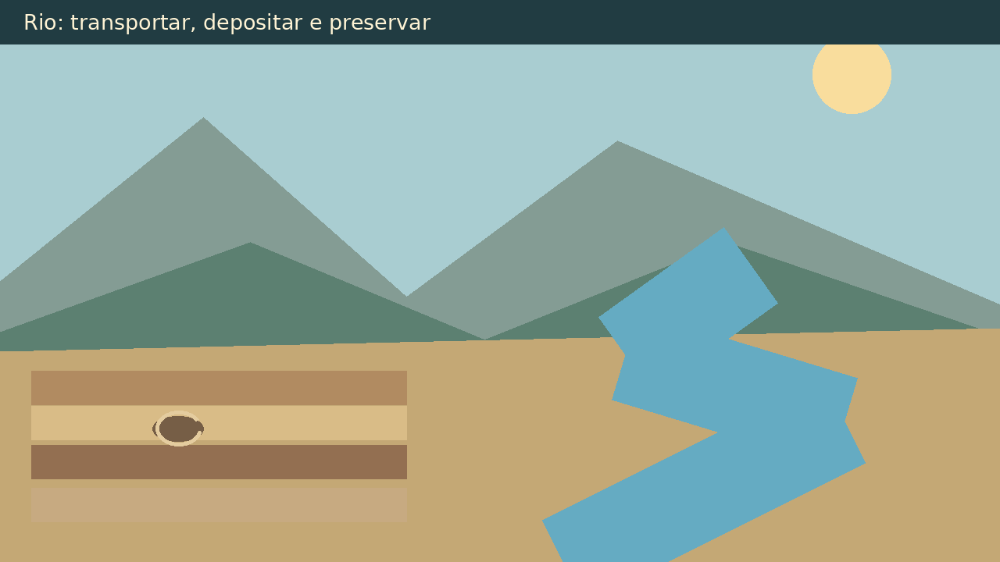

Leia as camadas
O desgaste produz sedimentos. O transporte os leva a outros locais. Deposição, soterramento, compactação e cimentação podem formar rochas sedimentares de fragmentos, como o arenito.

Leia as camadasA pista da conchaIr para MontanhaResolver as investigaçõesApoio de leitura diretoÁgua e vento podem transportar fragmentos produzidos pelo desgaste de rochas. Esses fragmentos são sedimentos. Quando se depositam e são soterrados, a compactação aproxima os grãos e a cimentação os une. O arenito é um exemplo de rocha formada pela união de grãos de areia. Nem toda rocha sedimentar se forma exatamente desse modo: esta cena trata das rochas sedimentares de fragmentos. Restos ou marcas de seres vivos podem ser cobertos por sedimentos. Em condições favoráveis, esses registros são preservados como fósseis. Encontramos fósseis principalmente em rochas sedimentares porque o soterramento pode proteger o registro, enquanto altas temperaturas e transformações intensas tendem a destruí-lo. Nem toda rocha sedimentar tem fósseis; uma marca em uma pedra também precisa ser investigada.
O desgaste produz sedimentos. O transporte os leva a outros locais. Deposição, soterramento, compactação e cimentação podem formar rochas sedimentares de fragmentos, como o arenito.
A concha desenhada representa um possível registro preservado. Fósseis são restos ou vestígios de vida do passado geológico. Nem toda rocha sedimentar tem fósseis.
Selecione para avançar à próxima cena.
Abrir cena →Use as evidências das cenas no percurso principal ou em Aprender de outro jeito. O resultado fica no percurso de atividades, separado desta exploração.
Abrir percurso →Acesso direto ao apoio com imagens, áudio, letras, palavras e frases. Não é preciso caminhar nem controlar um personagem.
Abrir percurso →Imagem: Ilustração didática autoral da produção pedagógica do Prof. André · CC BY 4.0 · illustration